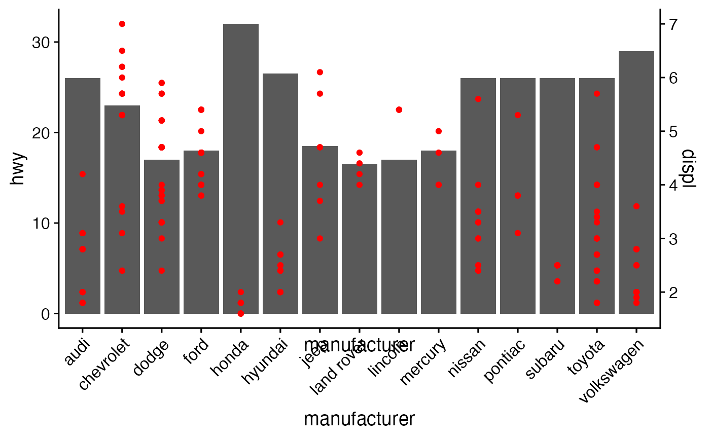

Align the plot area of multiple plots. Inputs are a list of plots plus alignment parameters.
Horizontal or vertical alignment or both are possible. In the simplest case the function will align all
elements of each plot, but it can handle more complex cases as long as the axis parameter is defined. In this case,
alignment is done through a call to align_margin(). The function align_plots is called by the plot_grid() function
and is usually not called directly, though direct calling of the function is useful if plots with
multiple y-axes are desired (see example).
align_plots( ..., plotlist = NULL, align = c("none", "h", "v", "hv"), axis = c("none", "l", "r", "t", "b", "lr", "tb", "tblr"), greedy = TRUE )
| ... | List of plots to be aligned. |
|---|---|
| plotlist | (optional) List of plots to display. Alternatively, the plots can be provided individually as the first n arguments of the function align_plots (see plot_grid examples). |
| align | (optional) Specifies whether graphs in the grid should be horizontally ("h") or
vertically ("v") aligned. Options are |
| axis | (optional) Specifies whether graphs should be aligned by the left ("l"), right ("r"), top ("t"), or bottom ("b")
margins. Options are |
| greedy | (optional) Defines the alignment policy when alignment axes are specified via the
|
library(ggplot2) p1 <- ggplot(mpg, aes(manufacturer, hwy)) + stat_summary(fun.y="median", geom = "bar") + theme_half_open() + theme(axis.text.x = element_text(angle = 45, hjust = 1, vjust= 1))#> Warning: `fun.y` is deprecated. Use `fun` instead.p2 <- ggplot(mpg, aes(manufacturer, displ)) + geom_point(color="red") + scale_y_continuous(position = "right") + theme_half_open() + theme(axis.text.x = element_blank()) # manually align and plot on top of each other aligned_plots <- align_plots(p1, p2, align="hv", axis="tblr") # Note: In most cases two y-axes should not be used, but this example # illustrates how one could accomplish it. ggdraw(aligned_plots[[1]]) + draw_plot(aligned_plots[[2]])